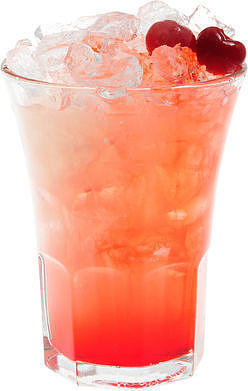

Май тай

Май тай появился на Гавайях в 1953 году, когда Бержерон создал меню коктейлей для отелей компании Matson.
Коктейль стал хитом и был назван «лучшим средством для соблазнения туристов».
Название предположительно было взято от maita'i, таитянского слова, означающего
«хороший» или «превосходный».